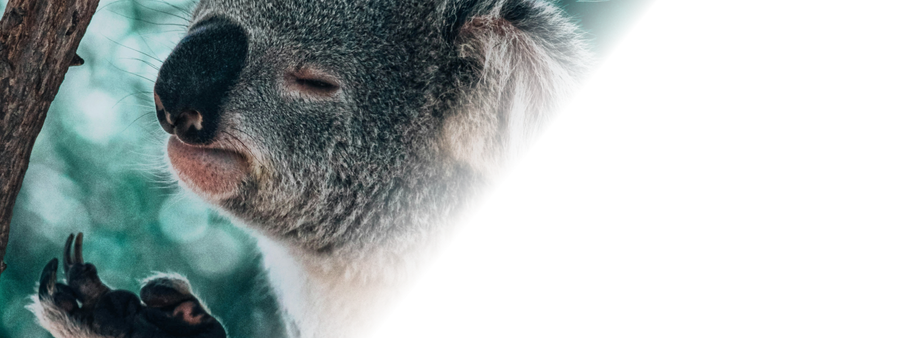
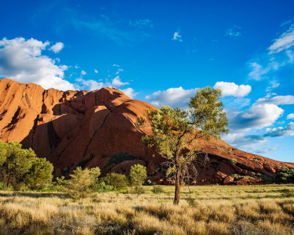

Nature
National Park
Let me introduce you to the representative national park
Animal
Let me show you the representative cute and lovely wildlife of Australia!
- Kangaroo
- Kangaroos are iconic animals that represent Australia, which is known throughout the world. They are marsupials, a unique mammalian species, and there are many different species of kangaroos that vary in size and habitat.
- It mainly feeds on grass and leaves, and lives in groups in vast meadows and forested areas.
- Quokka
- Quokas are often called the "happiest animals in the world" because of their friendly appearance and tendency to smile. They are usually found on the islands of Rottnest and Vald, off the coast of Western Australia.
- They are herbivores, which usually feed on grass and leaves, which are nocturnal and sleep most of the day. Conservation efforts are being made to protect them with attractive and adorable appearances.


- Koala
- Koalas are Australia's iconic marsupials that live in eucalyptus forests in eastern and southeastern Australia. They eat eucalyptus leaves and sleep up to 22 hours a day due to their undernourished diet.
- Threatened by habitat destruction and climate change, they are protecting their habitats and managing diseases to ensure their survival
Famous Natural attraction
Let me show you the representative cute and lovely wildlife of Australia!
Let me introduce you to Australian natural attractions incomparable to anywhere else in the world. Witness the truly vast and vast nature of the country, including cool pouring waterfalls, bubble gum-colored pink lakes, and the Great Barrier Reef. Make memories in Australia that you will never experience again!

